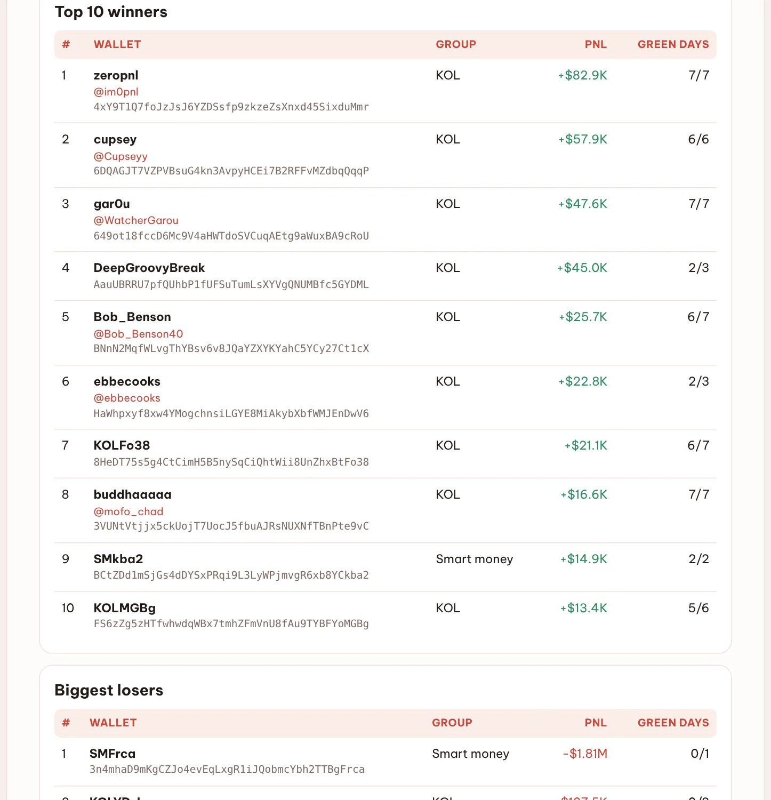
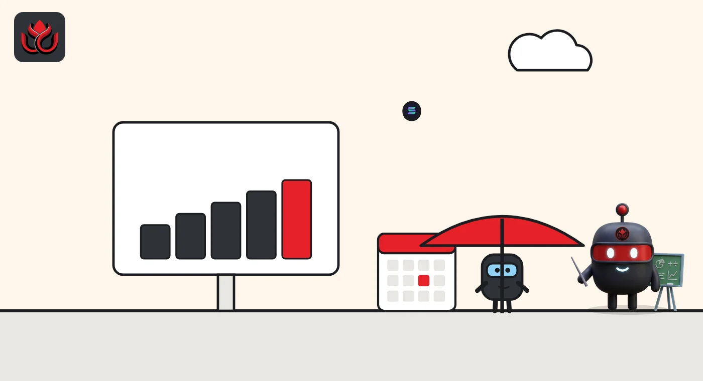

448 of 617 Solana influencers lost money last week. The best one won all seven days
DeepSea's tracked crypto influencers on Solana closed the week $395,600 down. A trader called zeropnl made $82,900 with seven green days, while one smart money wallet lost $1.81 million in a single day.
Key points
- DeepSea's 617 tracked Solana KOLs (key opinion leaders, or crypto influencers) realized a combined loss of $395,600 from October 26 to November 1; 169 were up and 448 down.
- The best was zeropnl (@im0pnl) at +$82,900 with seven green days out of seven; cupsey (@Cupseyy) made +$57,900.
- Smart money wallets did worse: minus $2.10 million, with one wallet, SMFrca, losing $1.81 million on its only trading day.
 What DeepSea's data shows
What DeepSea's data shows
DeepSea's weekly report counts realized profit and loss, meaning only trades that were closed, for wallets it tracks. On Solana, its 617 KOL wallets lost $395,600. Only 169 finished in profit; 448 finished in loss.
The 415 smart money wallets (wallets with a strong past trading record) lost $2.10 million, with 96 up and 319 down. Most of that came from one wallet, SMFrca, at minus $1.81 million with one trading day. Across all 1,103 tracked Solana wallets, the week ended at minus $2.76 million, worse than the minus $786,800 of the week before. The worst day was October 28, at minus $1.93 million.

Data: DeepSea (desea.io), checked November 3, 2026, 6:40 p.m. ET.
The winners
The top of the table belonged to steady traders. zeropnl (@im0pnl) made $82,900 and was green on all seven days. cupsey (@Cupseyy) made $57,900, green on six of six trading days. gar0u (@WatcherGarou) made $47,600, also seven for seven. buddhaaaaa (@mofo_chad) added $16,600 with seven green days.
DeepSea notes that the gains were spread out: none of these wallets earned more than 25% of the week's total profit.
Best and worst Solana KOLs, October 26 to November 1
US$ thousand
Source: DeepSea weekly report, October 26 to November 1, 2026.
The losers
The worst KOL was the wallet DeepSea labels KOLYDzL, at minus $107,500 over two trading days, both red. Chairman ² (@Chairman_DN) lost $39,400 and was green on only two of seven days. On BSC, DeepSea's eight tracked KOLs lost $55,400.

What about Asian KOLs?
DeepSea's Asian KOL report for the same week found just one Asian KOL with closed trades on Solana: Cowboy (@feibo03), a Chinese-speaking trader, at minus $82 over two red days, after +$12 the week before. No new Asian KOL wallets were spotted. It was a quiet week for the group, not a lucky one.
LC Insight analysis
This section is our reading of the facts above, not a statement of fact.
- We think the main lesson is simple: following influencers is not a shortcut. Nearly three in four of them lost money this week, and DeepSea itself says KOL calls are no free edge.
- DeepSea's data does not show how the traders with seven green days trade, only that they closed each day in profit. Anyone copying them sees their trades only after they happen.
- Big totals can hinge on one account. Smart money's $2.10 million loss was mostly a single wallet, SMFrca, which lost $1.81 million on its only trading day.
What's next
- Whether zeropnl and cupsey keep their streaks next week
- Whether Solana smart money returns to profit after a $2.10 million loss
- New Asian KOL wallets in DeepSea's next report
Disclaimer. This article is based on public information and the sources listed below as of the update time shown. It is for information only and is not investment, legal or tax advice. Figures may change as companies and authorities publish new data.